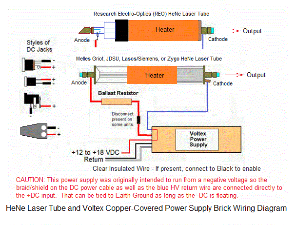
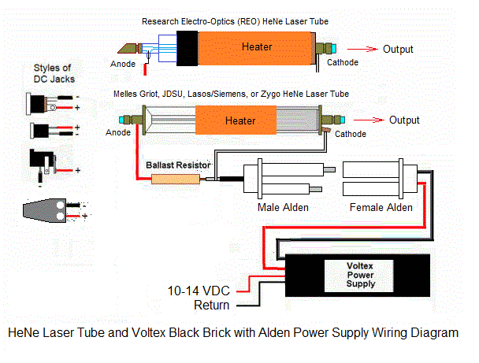
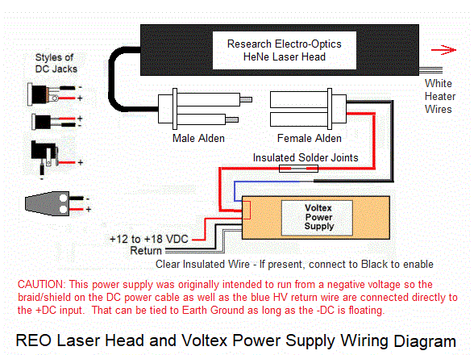
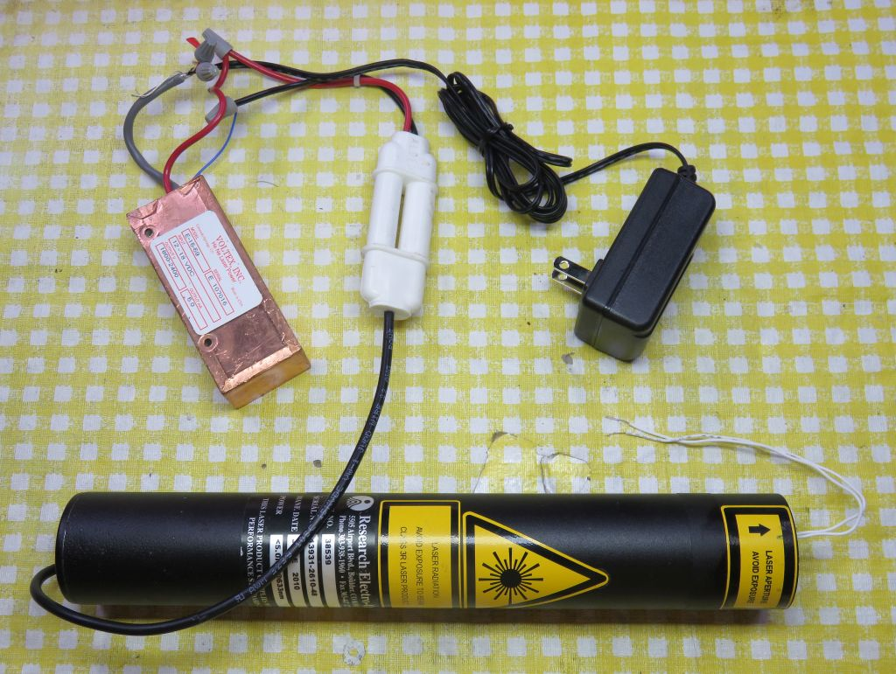
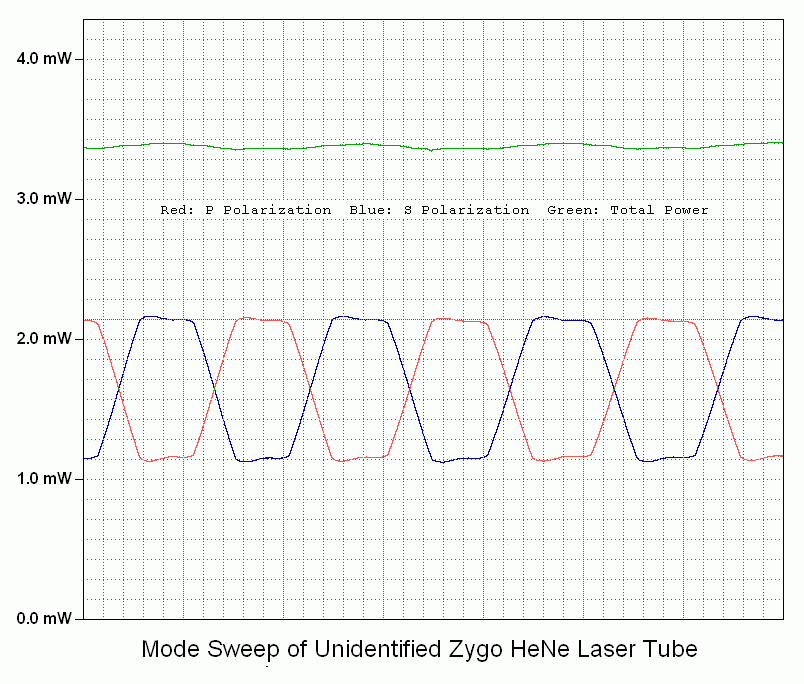

IMPORTANT: Most of the information below applies to any of the types of laser tubes that may be included in the kit. However, for the specific case of the Research Electro-Optics (REO) tube, there are some physical differences, which will be noted and the REO tube is available safely enclosed in an aluminum cylinder with heater already attached. (This may be the only REO version currently available.)
Laser/optical components in this kit
WARNING: Do not touch the anode-end of the tube when powered or for several minutes after being turned off to avoid shocking experience! But it should be OK to use a clip lead to short the two ends of the tube AFTER shutting off power. Touch it to the cathode-end FIRST!
For the option with an enclosed laser head instead of bare glass laser tube, the laser power specifications are similar, but the hassle of wiring the tube and attaching the heater is eliminated. And mounting is simplified. Only the electrical connections to the female Alden connector need to be dealt with.
Arduino controller components in this kit (Arduino version only)
Much more on the µSLC1 controller at: Micro Stablized Laser Controller 1 (µSLC1) Installation and Operation Manual. It includes specifications, assembly instructions, and information on the µSLC1 firmware and Windows Graphical User Interface (GUI).
What you will need to provide
If enclosed in a laser head cylinder, this is all taken care of since it is mounted using RTV Silicone. A similar scheme can be used to mount a bare tube. But there is no WOW option with the enclosed cylinder, sorry.
Alternatively, the PBS can be glued to a post with the PDs glued to its back and side, or to some simple plastic or metal enclosure of your choice. The PDs can also be installed on a piece of Perf. board with the PBS glued between them. A spacer (made from a piece of Perf. board or something similar) may be required to lift the PBS to the optimum height. Take care with the PD lead wires as they are easily broken. Very thin wire (e.g., AWG #30) is recommended. Do NOT apply any stress while soldering as the heat can melt the plastic causing them to shift and break internally. After soldering, confirm that the PDs still behave like diodes with a DMM.
The laser power meter can simply be a silicon photodiode and multimeter or microammeter since actual power measurements aren't needed. The photodiodes included in the kit, and P-Mode and S-Mode redouts and plot of µSLC1 can serve this function even if the laser isn't entirely assembled.
Power and wiring:
Power supplies are required for the laser tube, heater, and the Arduino (when not connected to USB). These can all run off the pair of 12 VDC or 15 VDc power packs / wall adapters included:
Summary for Voltex copper-covered brick ONLY:
NONE OF THESE BRICKS ARE AUTOSWITCHING! POWERING THE BRICK WITH THE WRONG WIRING CAN DESTROY IT ISNTANTLY.
But here are the guidelines:
In most cases, I will have labeled the wires and/or tied together wires as appropriate. But if at all in doubt, contact me before doing something you may regret.
CAUTION: DO NOT power the Nano from both a line-powered computer's USB and a power supply. This may include a laptop using its AC power pack. In my experience, bad things happen, like the CPU or USB chip on the Nano board dying. See the info in the µSLC1 manual.
Hooking up power to the tube correctly is critical to its survival and life. This is extermely important since the laser tube is the most expensive part of the kit by far.


This shows tubes with the output from the cathode-end. Most of the kits will be this way but double check to be sure. The output comes from the end of the tube with a blue-ish AR-coating on the mirror. HOWEVER, THE CONNECTIONS MUST BE AS SHOWN: The positive (red) wire and ballast goes to the glass-end of the tube (usually the mirror mount stem or a pin fused into the side of the glass tube). The negative (black) wire goes to the cathode which may be an aluminum can (all but REO and Zygo), shiny coating on the glass (Zygo), or all metal (REO). Otherwise, the tube may be destroyed quickly even if the laser appears to work.
Make sure the anode-end of the tube and the connection to it are well insulated and cannot arc to anything. Keeping anything conductive (including stupid humans) at least an inch away should be adequate. Or it can be protected inside an insulated housing. During starting, there may be up to 10 kV there and any leakage or arcing will prevent starting and may destroy the power supply. And accidentally touching it, while not dangerous, will be unpleasent and may cause you to toss the entire thing across the room, which is bad form at the very least. ;-(
For the REO tube ONLY, the anode connection is to the pin sticking out of the side of the glass, NOT the HR mirror stem. There may be a 1M ohm resistor between it and the mirror stem to aid in starting. The mirror stem itself can be Used instead of the pin and will actually result in slighlty more output power but may reduce tube life slightly. How much is not known.
The power supply should have a ballast resistor already attached to it along with a suitable connector for the tube anode. If not, contact me before proceeding. The exception for the REO tube enclosed in an aluminum cylinder where the ballast is inside.
It is essential that the wiring to the HeNe laser tube have the correct polarity as noted above. Reverse polarity may ruin the tube in a few minutes even though it may appear to light up and lase normally. The tube is the most expensive part of this kit by far. For all but the REO tubes, the end that has the thick glass capillary is the anode, positive, fat red wire, and ballast resistors. The end of the tube with the aluminum can or shiny coating is the cathode, negative, fat black wire or blue wire of the power supply brick. (Where the brick has multiple black wires, they are probably connected internally.)
WARNING: There may be over 2,000 V present while running and over 10,000 V at startup on the anode mirror mount of the tube! Stay clear! There will be a significant charge remaining for a while after shutting off power. Touching the anode probably won't kill you but throwing the tube across the room as a result of a reflex reaction is bad form and may upset your thesis advisor.
The laser head has the tube wired internally with a ballast resistor and a cable with a white "Alden" high voltage male connector. For kits shipped with the head, a mating female Alden connector and short cable will be provided. The required heater is also pre-installed inside the cylinder with a pair of thin white wires exiting from the front of the head cylinder. A loose-fitting end-cap is included to cover the front of the head while permitting the white wires to exit. It can be taped in place or some tape can be wrapped around the perimeter so it fits snugly.
The wiring may be connected with "Wire Nuts" for testing as shown in the right-hand graphic, but proper permanent wiring - preferably soldered - should be done at least for the connection between the fat red wires on the power supply and Alden, along with high voltage insulation consisting of several layers of electrical tape or similar.


CAUTION: For the Voltex brick specifically, DO NOT connect the negatives of the DC adapters together or cheat and use a single higher current power supply for both HeNe and heater power - that will result in smoke or damage to the adapter(s). But it should be possible to tie the positive of the Voltex brick to system negative and Earth ground. Confirm that the red and black power wires of the Voltex brick are not shorted before powering. Please contact me if this isn't crystal clear.
Make sure all connections are secure before applying power. Solder is recommended as noted above, but ues of "wire nuts" is acceptable, in which case the one for the high voltage should be further insulated with electrical tape.
The tube should light within a few seconds of applying DC power to the brick. The output power from the laser tube may start relatively low (llke 2.0 mW) and climb to between 2.5 mW and 3 mW or more. (This modest increase probably won't even be obvious using only Mark I eyeballs.) The beam should be on continuously with no pulsing, flickering, or sputtering. If not, double check connections and DC power. If it continues to misbehave, contact me. Once the operation of the tube has been confirmed, power down and discharge the power supply and tube capacitance by shorting between the two ends of a tube with a pair of clip leads, touching the negative FIRST to avoid a shocking experience.
Some lasers are slow to start taking up to a minute or more. This can generally be speeded up by shining a light in to the tube from the output-end.
Install the heater:
(This step is not required for the REO tube in a laser head cylinder as the heater is already there, with a pair of white wires sticking out for the connections.)
The thin film heater may already be attached to the tube. If not, wrap it tightly around the tube centered between the ends but so there is at least 1/2 inch between it and the anode-end of the tube. Orient it such that its wires come out at the cathode-end. If there is no adhesive, secure it with Kapton tape but don't smoother it. Just a single layer. Plastic packing tape (e.g., clear or brown) will work in a pinch.
Determining the polarization axes of the tube:
The lasing characterstics (output power, beam diameter, and divergence) are similar for all of these model tubes. However, the REO tube is the only one to actually force the polarization axes to have a specific orientation relative to the physical structure of the tube. This involves using a pair of HR mirrors to provide a small amount of polarization preference, and an axial magnet field spoil that just enough so that the modes behave properly. That accounts for the funky and unique appearance of the REO tube. So, there is no real need to "determine" the polarization axes for the REO tube but the exercise below is still worthwhile to familarize yourself with polarization behavior of any of the tubes. The other manufacturers depend on the natural birefringence of mirror coatings to create the polarization preference so the step is essential, but the mirrors are not installed with any particular orientation.
Note that HeNe laser tubes actually produces 2 beams: A strong one through the "Output Coupler" mirror (OC) called the "main beam" and a much weaker one from the "High Reflector" mirror (HR) called the "waste beam" (though in some cases it is painted over). For all but the REO tube, the beam sampler for stabilization can be constructed behind the rear of the tube and use the waste beam since there is adequate beam power present there. But take care since the high voltage will be present near there as well.
Using the waste beam is NOT an option for the REO laser head since it is blocked by the rear end-cap with the Alden cable. The waste beam from the REO tube is probably too weak to be usable anyhow, so the feedback must be done by sampling the output beam.
To use the main beam, a portion must be split off using a glass plate. If a variable attenuator is included, it is intended for this purpose. Use the end with the least attenuation and place it at an small angle to the beam line 20 degrees (not at 45 degrees). This is to minimize polarization effects in the reflection if it is anywhere close to the Brewster angle. The only disadvantage if this scheme is that there will be a small loss in usable beam power. But in principle, using a portion of the main beam for feedback will have slightly better stability, especially for intensity stabilization with some tubes. This is because the rear mirror is not AR-coated and may not have "wedge", which results in interference inside the mirror and a varying amount of transmission as its thickness changes due to thermal expansion. Some of these tubes have a layer of optical glue with a mottled appearance applied to the rear mirror in an attempt to remedy this. If in doubt, contact me for more details. And again, if you use output beam sampling, this is mostly a non-issue.
For this purpose, a variable attenuator plate has been included in the kit to use as a beam sampler. It should be oriented at as near-normal an angle as is convenient to minimize the effects on polarization. E.g., if near the Brewster angle, one polarization orientation will be highly reflected while the other almost not at all. And using the end with the highest transmission should be satisfactory to provide adequate sampled beam power.
As noted, there is no need to determine the polarization axes of a REO tube because they are fixed by the construction, are oriented lined up with the anode pin, and orthogonal to it. For the REO head, one should be lined up with the arrow on the head. But even if you are using a REO laser, you can still do the following exercise as a learning experience. And labels are not always accurate. With the tube powered, place a continuous reading laser power meter in the output beam. This can be one of the photodiodes connected to a VOM or DMM set to its µA range, or wired up for input to the P-Mode or S-Mode signals of µSLC1 Atmega board with the µSLC1 GUI running in the "Hangout" state. They should vary by anywhere from 30 percent to 100 percent, and will be opposte phase. Use a piece of linear polarizer sheet or the PBS cube to identify the orientations of the polarized modes of the tube. The angles of the polarization axes will be where the variation in power due to mode sweep is maximized, though for a 9 or 10 inch tube the power won't go close to zero power. There will be two such angles orthogonal to each-other. Label the axes and adjust the orientation of the tube so they are vertical and horizontal.
The power varies because the longitudinal modes of the laser cavity are moving through the neon gain curve as the tube expands due to heating. The roughly bell-shaped gain curve results in gain variation depending on its height. If a few V is applied to the heater (between the two heater wires), the rate of the mode sweep will greatly increase since the tube is expanding faster making it easier to determine the axes.
As the tube/heater combination approaches thermal equilibrium where the power input from the electrical discharge in the bore of the laser tube and heater power are balanced by heat loss to the environment, the mode sweep will slow down and eventually stop. If power is removed from the heater at that time, the discharge heat alone will no longer be able to sustain the same temperature, the tube will start to cool, and the mode sweep will reverse.

This shows the mode sweep from a cold start of a tube similar to one type that may be included in the kit. However, the actual shape of the S and P-mode plots may be quite different for your actual tube. If both the P-Mode and S-Mode photodiodes are wired to the Atmega with the sensitivity adjusted so the peaks are near 5 V, then the µSLC1 plot will be very similar in appearance. If the heater is also connected, with µSLC1 in the "Hangout" state, it can be turned on or off or set anywhere in between to change the speed and direction of mode sweep. Or the heater can be powered with a few V from a separate DC power supply or battery for these tests.
And while it would be possible to manually stabilize the modes by visually monitoring them, the Atmega can do it much more precisely and won't get tired and bored doing it all day long. ;-)
For thermal stabilization to be effective, what is desired is where a modest amount of heater power is needed to be at thermal equilibrium. Perhaps 20-30 percent of the power in the bore discharge with the driver running at 50 percent power. For the 9-10 inch tube running at at 5 mA, 1600-1900 V, the bore discharge power is under 9.5 W. So, 3 W of heater power should be sufficient to allow the laser to stabilize with reasonable immunity to ambient temperature changes.
A purist might object (due to noise considerations), but this means that a single power supply can be used for both the HeNe laser power and the stabilizer, though this kit probably has two power supplies. However, the 12 VDC power supply may be too high if the heater resistance is under 10 ohms. For that case, a compact 3A DC-DC step-down converter is included so the 12 VDC can be dropped to a more optimum value. Setting the DC-DC converter for the voltages below based on the heater resistance should be satisfactory:
Heater Ohms ~Voltage
-------------------------------
5 5.5
8 7
Using a slightly higher voltage to improve the response time would be acceptable but don't let it exceed 1.5 A. The DC-DC converter is labeled with IN and OUT, + and -. The minus should be common. (There will be no DC-DC converter for the REO tube or head since the heater resistance is around 12 ohms and 12 V direct is fine.)
Checking the beam sampler:
Either the weak "waste" beam from the back of the tube (if usable), or a sampled portion of the main beam may be used for feedback. However, depending on the specific tube, it may take a bit more work to use the waste beam. This is because they may not have "wedge" to eliminate the etalon effects of the parallel surfaces of the HR (rear) mirror glass. If there is a black opaque or clear mottled coating on the rear mirror, there is probably no wedge. If there is nothing or an opaque sticker with a center hole, project the beam onto a white card a couple feet away. If there is only one spot, there is no wedge. But if there is at least one weaker beam off to the side, then wedge is present and the waste beam can be used without further fuss. Cut a piece of a sticky black label or other similar opaque material to be about the same size as the mirror glass at the rear of the tube (order of 6-8 mm or 1/4 inch). (Use a Magic Marker to turn a white label black if needed so it's more or less opaque.) Use a tiny drill bit or similar tool to make a clean 0.7 to 1 mm hole in it. With the laser powered, stick this aperture over the rear end mirror so the weak waste beam passes through it. (Don't worry about blocking the ghost beam.) The purpose of the aperture is to block "bore light" from affecting the photodiodes in the beam sampler. (The tube provided may already have something like this in place but you might want to improve upon it.)
Place the PBS on a support behind the tube so the waste beam passes through its center and a deflected beam shoots off to one side. If using the main beam, install the beam sampler plate at around 45 degrees. Eventually it will need to be mounted securely, but for now, anything that works will suffice.
Now use a white card as a screen to observe the beam coming straight through the PBS and the beam being reflected to the side. They will vary in intensity along with the polarized modes coming out the front. One of the photodiodes will be placed behind the PBS cube and the other on the side. Monitor the current from one of the photodiodes or use the µSLC1 to display the power. Adjust the orientation so that the variation in amplit1ude is maximized. Doing this by eye may not be reliable since for these higher power tubes, the variation won't large enough for the optimum orientation to be determined reliably.
Testing the photodiodes response to laser light:
To test the response of the silicon PhotoDiodes (PDs) included in these kits, a simple test circuit using a few resistors, a 5 VDC power supply (or USB charger cube), and DMM can be constructed before connecting the Arduino board. To determine the polarity of the PDs, use the DMM on the "Diode Test" range across the pins: The voltage drop will be between 0.5 and 0.6 V if the red probe is connected to the anode. The polarity is usually opposite for a VOM but they are only found in museums these days. ;-)
Wire up a test circuit as follows:
V1
o
R Protect PD1 | R Load 1
+5 VDC o----/\/\----+-----|<|---+---/\/\-----+
| |
| V2 |
| o |
| PD2 | R Load 2 |
+-----|<|---o---/\/\-----+
|
|
GND/RET o-------------------------------------+
The trim-pots in the µSLC1 kit are 1M so they will be satisfactory for all options.
CAUTION: If the PDs are at the anode-end of the tube, take care to keep the setup at a safe distance as they won't like being zapped by the high voltage. Nor will you. :( :)
Closing the loop:
To stabilize the laser so that the position of the modes is under automatic control requires some electronics to first run the tube in "Preheat Mode" so that the temperature of the tube/heater combination levels off somewhat above ambient, and then to "Lock Mode" to allow the output of one or both photodiodes to take control. This is the purpose of the Arduino compatible µSLC1 controller. Complete installation and assembly instructions may be found at Micro Stablized Laser Controller 1 (µSLC1) Installation and Operation Manual.
The output of the laser when locked will be the two orthogonal linearly polarized modes whose the amplitudes can be adjusted over a fairly wide range via the trim-pots and µSLC1 firmware settings, while retaining mode purity. To use this rig as a single frequency laser for something like holography or homodyne interferometry, one of the modes should be blocked with a Linear Polarizer (LP) such as another PBS cube (for best efficiency but not included) or a sheet polarizer (included).
Enhancements/experiments:
Lack of wedge means that there will be reflections from its outer surface back into the laser tube. But more significantly, there will be etalon effects between the outer uncoated glass surface and the mirror which will result in a slight ripple in output power (in addition to mode sweep) as the tube warms up and may reduce the overall stability. The intensity of the waste beam will vary in lock-step, but much more dramatically. And the two polarizations may not change by the same amount, so if using the waste beam for feedback, it may not correlate with what's coming out the front. A simple fix is to add a glass plate at a small angle (a few degrees) using clear 5 minute Epoxy, UV cure optical adhesive, or clear RTV Silicone. Even just a drop of the adhesive without the glass plate will probably be effective. Index matching adhesive is best but almost any type will be close enough to greatly reduce the retroreflections. DON'T use Crazy glue (cyanacrylic) or hard Epoxy!!! as these may damage the optics and/or stick you finger(s) to them. ;(